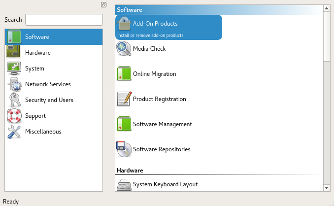

Raspberry Pi Quick Start |
This guide contains an overview of SUSE Linux Enterprise Server for Arm on the Raspberry Pi* platform and will guide you through the setup procedure.
1. Platform overview
To use SUSE Linux Enterprise Server for Arm on Raspberry Pi, a 64-bit Arm* compatible Raspberry Pi* is required. SUSE Linux Enterprise Server for Arm15 SP7 is tested to work on Raspberry Pi 3 Model A+, Model B, Model B+, and Raspberry Pi 4 Model B boards as well as on Raspberry Pi Compute Module 3 and 3+ on MyPi Industrial IoT Integrator Board.
1.1. Technical details of the Raspberry Pi 3 model B
Raspberry Pi is a series of small single-board computers based on a System-on-a-Chip (SoC) by Broadcom*, featuring various peripherals on the board.
- CPU
-
The Broadcom BCM2837 SoC includes a quad-core Arm* Cortex*-A53 Application Processor supporting the Armv8 32-bit and 64-bit instruction sets. With the default configuration, it is clocked up to 1.2 GHz.
- RAM
-
1024 MiB DDR2 memory mounted on the back of the board.
- Graphics
-
Broadcom* VideoCore* IV providing OpenGL* ES 2.0 support. Displays can be connected over HDMI*, composite (TRRS jack), or MIPI* DSI* (ribbon cable).
- Ethernet
-
A USB Ethernet controller on the board provides 10/100 Mbit/s Ethernet (Model B) or 10/100/1000 Mbit/s Ethernet with a maximum throughput of 300 Mbit/s (Model B+).
- WLAN
-
The BCM43438 chip on Model B supports IEEE-802.11b, IEEE-802.11g, and IEEE-802.11n in the 2.4 GHz band. It also provides Bluetooth 2.0 to 4.1 (Low Energy). The BCM43455 chip on Model B+ supports IEEE-802.11b, IEEE-802.11g, IEEE-802.11n, and IEEE-802.11ac in the 2.4 GHz and 5 GHz bands. It provides Bluetooth 4.2 (Low Energy).
- Storage
-
The microSDHC card slot allows for a memory card to be inserted as the primary boot medium.
- Power
-
Raspberry Pi 3's main power source is the Micro USB connector. If your Raspberry Pi comes with a power supply, it is recommended to use the bundled power supply only.
- USB
-
A total of four USB 2.0 ports are available.
- Connectors
-
A 0.1 inch multi-function pin header is also available. Note that not all functionality of this header is exposed in SUSE Linux Enterprise Server for Arm15 SP7.
1.2. SUSE Linux Enterprise Server for Arm 15 SP7
SUSE Linux Enterprise Server for Arm is the first fully supported commercial Linux operating system product available for Raspberry Pi. You can purchase subscriptions which entitle you to receive all released bug and security fixes, feature updates, and technical assistance from SUSE's worldwide support. Learn more about subscription and support options at https://www.suse.com/support/programs/subscriptions/?id=SUSE_Linux_Enterprise_Server.
If you want to try out SUSE Linux Enterprise Server for Arm15 SP7 on Raspberry Pi, SUSE will provide you with a trial version. This gives you access to free patches and updates for a period of 60 days. You must log in to the SUSE Customer Center at https://scc.suse.com/ using your Customer Center account credentials to receive this free offer. If you do not have a Customer Center account, you must create one to take advantage of the trial version.
Minimum System Requirements for Installation
-
Raspberry Pi 3 Model A+, B, or B+, or Raspberry Pi 4 Model B
-
microSD card with at least 8 GB capacity
-
USB keyboard, mouse
-
HDMI cable and monitor
-
Power supply with at least 2.5 A capacity
1.2.1. Differences compared to Raspberry Pi OS
Raspberry Pi OS is the de-facto default distribution for Raspberry Pi. The following paragraphs provide a short overview of differences between SUSE Linux Enterprise Server for Arm on Raspberry Pi and Raspberry Pi OS.
- Based on upstream kernel
-
Raspberry Pi OS uses a kernel with modifications especially for Raspberry Pi. SUSE Linux Enterprise Server for Arm uses the default SUSE Linux Enterprise kernel for AArch64, which is derived from the official mainline kernel.
- AArch64 instruction set
-
SUSE Linux Enterprise Server for Arm on Raspberry Pi is the first distribution for Raspberry Pi using the AArch64 instruction set.
- Boot process
-
In Raspberry Pi OS, the kernel is loaded directly. This is not supported by SUSE Linux Enterprise Server for Arm, where the U-Boot boot loader is used to provide an EFI boot environment. A GRUB2 EFI binary is chain-loaded to provide a graphical boot screen.
- Root file system
-
SUSE Linux Enterprise Server for Arm for Raspberry Pi uses Btrfs as the file system for the root partition. Compression is enabled by default for better SD card performance.
1.2.2. YaST
YaST is the installation and configuration framework for SUSE Linux Enterprise. It
is popular for its ease of use, flexible graphical interfaces and the capability to
customize your system quickly during and after installation. YaST can be used to configure
your entire system: You can configure hardware, set up networking, manage system services,
and tune your security settings. All these tasks can be accessed from the YaST control
center. To start it, choose YaST in the menu or run the command xdg-su -c yast2. You will be prompted to enter the password of the root user.

When started, YaST shows an overview of available modules (Figure 3, “The YaST control center”). Simply click an icon to open a module.
1.2.3. Zypper
Zypper is the package manager for SUSE Linux Enterprise. It is the tool for installing, updating and removing packages and for managing repositories.
The general syntax for Zypper invocations is:
zypper [global-options]command[command-options][arguments] ...For most commands, there is both a short and a long form. An overview is available
with zypper --help.
- Installing a package
-
#zypper install mplayer - Removing a package
-
#zypper remove mplayer - List available patches
-
>zypper list-patches - Install available patches
-
#zypper patch
The recommended way to install available software updates is by using the YaST Online
Updater. To start it, choose Online Update
in Settings
under Desktop Apps
in the IceWM menu.
1.2.4. Limitations
- Graphics not hardware-accelerated
-
X.Org hardware acceleration is disabled to improve system stability and reliability.
For other limitations, refer to the online version of the Release Notes at https://www.suse.com/releasenotes/aarch64/SUSE-SLES/15-SP7/.